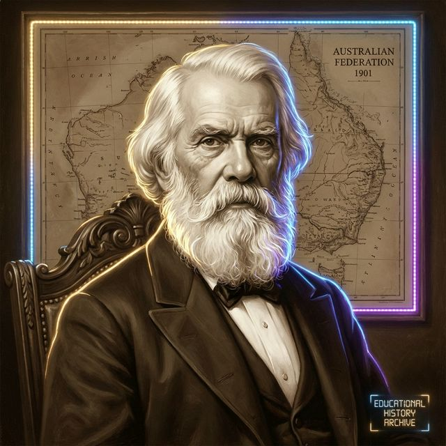
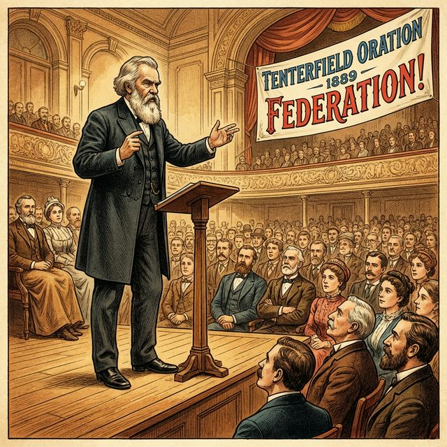

Step back in time to discover how one man’s vision brought six separate colonies together to form the nation of Australia.
Sir Henry Parkes was born in 1815. He arrived in Australia in 1839 as a poor immigrant, but he worked hard and eventually became the Premier of New South Wales five times!
Parkes is best known as the 'Father of Federation' because he spent years convincing people that Australia should be one united country.

On 24 October 1889, in the small town of Tenterfield, Parkes gave a speech that changed everything. This became known as the Tenterfield Oration.
He called for the six colonies to unite. At the time, each colony was like a separate country, with its own taxes, laws, and even different railway track sizes!
Click the markers to see the key moments in the journey to Australia's birth.
Tenterfield Oration: Parkes calls for a convention to write a constitution.
Sydney Convention: The first draft of the Australian Constitution is written.
Second Convention: People across the colonies vote on the plan.
Federation Day: The Commonwealth of Australia is officially born!
Sadly, Sir Henry Parkes died in 1896, five years before he could see his dream come true. However, his vision and hard work are the reason we celebrate Federation Day on 1 January every year.
He showed that even with many differences, people can choose to work together for a better future.